C'est trop dangeureux d'y aller seul! Prends ça!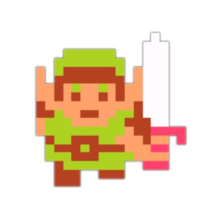
"Alors que le sort du Royaume semblait scellé… Un jeune homme, tout de vert vêtu, surgit de nulle part. Il brandit son épée magique, fit taire l’être maléfique, et ramena la lumière dans la province
–Introduction, The Wind Waker
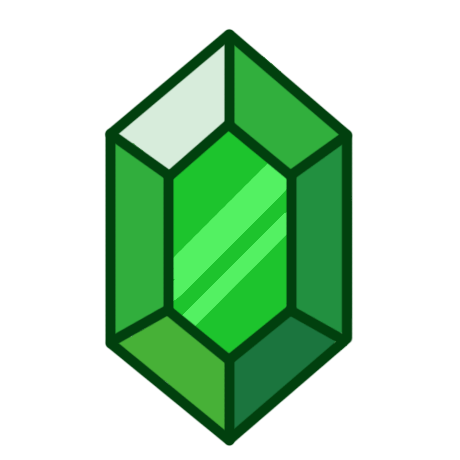
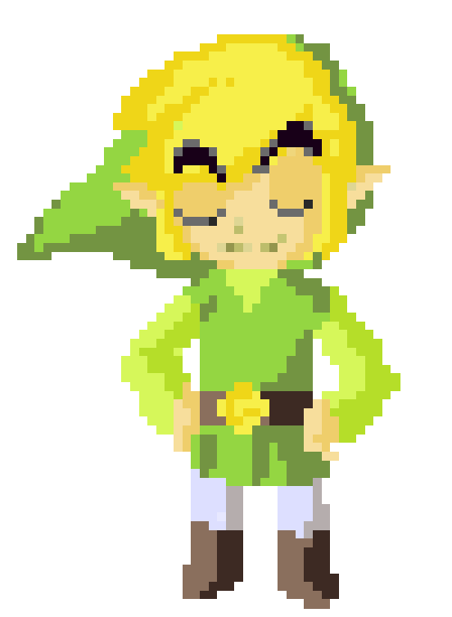
Qu'est ce que The legend of Zelda?
The Legend of Zelda, ou simplement raccourci par la communauté pour "Zelda", est une série de jeux vidéo d'action-aventure (et action RPG) produite par la société japonaise Nintendo et créée par Shigeru Miyamoto et Takashi Tezuka.
Depuis 1986 et la sortie du jeu The Legend of Zelda sur la console NES, dix-neuf jeux font officiellement partie de la saga. Plusieurs rééditions, remakes et jeux dérivés ont également vu le jour.
Elle met en scène la lutte éternelle des différentes réincarnations du héros Link et de la Princesse Zelda  contre Ganondorf, le Seigneur des Ténénres qui s'obstine constament à obtenir cette Triforce.
C’est aussi le jeu à s’être vendu le plus rapidement, 6 millions d’unités en 8 semaines!!
contre Ganondorf, le Seigneur des Ténénres qui s'obstine constament à obtenir cette Triforce.
C’est aussi le jeu à s’être vendu le plus rapidement, 6 millions d’unités en 8 semaines!!
La série est connue notamment pour son côté exploration, jouer des jeux en monde ouvert, son gameplay, la profondeur de son scénario plutôt intriguant, la multitude de divers quêtes secondaires qui rapportent toute sortes de récompenses, et ses musiques créées par Koji Kondo (le même compisiteur des musiques de Super Mario). Ce jeu a connu un succès énorme!!
Selon Metacritic, qui répertorie les notes de toute la presse et de tous les sites spécialisés, l'épisode Ocarina of Time , sorti en 1998, sur la Nintendo 64 est le meilleur jeu vidéo de tous les temps, toutes consoles confondues.
D'ailleurs, six jeux, parmi les dix-neuf de la série, obtiennent un score moyen supérieur à 95 %
But principal du jeu
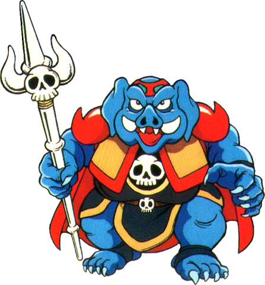
Mis à part quelques épisodes tels que The Legend of Zelda: Majora's Mask ou The Legend of Zelda: Link's Awakening,
chaque jeu de la série suit un scénario principal identique : le héros, Link, doit anéantir le seigneur du Mal, souvent Ganon, et sauver la princesse Zelda.
Link peut être un personnage différent selon les épisodes, mais sa tenue (une tunique verte et un bonnet pointu) est toujours la même, excepté dans le dernier Zelda paru en 2017, Breath of the Wild.
Dans certains épisodes, le nom de Link peut être personnalisé par le joueur.
Presque tout les épisodes contiennent des mélanges d'énigmes, de phase d'exploration et de combats.
Ces éléments sont constants dans la série, mais ont connu des évolutions au courant de leur gameplay.
Le joueur est fréquemment récompensé par l’acquisition de nouveaux objets pour avoir résolu une énigme ou fouillé de fond en comble une zone.
Dans tous les Zelda, le joueur doit trouver et explorer des donjons (ou temples) parsemés d’énigmes et de combat jusqu’à atteindre le boss du donjon.
Dans la plupart des jeux de la série, chaque donjon a un « thème » comme le feu, la forêt ou l’eau, mais aussi le temps, l’ombre ou l'esprit (Ocarina of Time).
Les énigmes donnent généralement accès à des clefs qui permettent d’ouvrir de nouvelles parties du donjon.
Pour se repérer plus facilement dans ces labyrinthes, le joueur peut également trouver une carte et une boussole indiquant l’emplacement des coffres et du « boss ».
Chaque donjon contient un objet particulier et unique,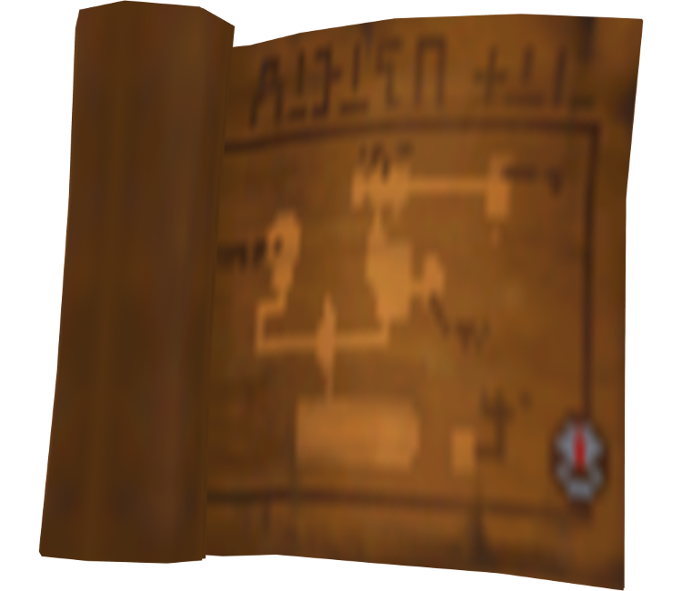 essentiel pour la suite de la quête et qui est la plupart du temps acquis après avoir vaincu un « mini-boss ».
Certains de ces objets sont communs à presque tous les jeux (comme l’arc, le boomerang ou le grappin), alors que d’autres sont uniques comme l'aérouage dans Twilight Princess. Une fois cet objet obtenu, le joueur doit trouver le boss, et déverrouiller son antre grâce à une clef nommée « clef du boss ». 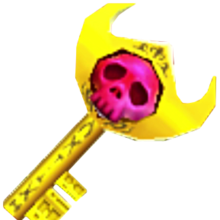
Il doit alors vaincre le boss en utilisant, en général, l’objet ou l’arme obtenu(e) dans le donjon.
Qui est Link?
Link est le protagoniste de la série The Legend of Zelda. D'ailleur je n'ai aucune idée de pourquoi le nom du jeu n'est pas celui du personnage dans l'oeuvre qu'il se trouve. Il a été créé en 1986 par Shigeru Miyamoto en tant que héros du premier jeu de la série, The Legend of Zelda. Son nom vient du mot anglais link (lien), car il est un lien entre le joueur et le personnage du jeu. Plutôt bien pensé non? Il est cependant possible de modifier son nom au début du jeu. Il représente en fait plusieurs incarnations d’un même personnage à travers le temps et à travers les jeux. Comme par exemple:
- Link adulte 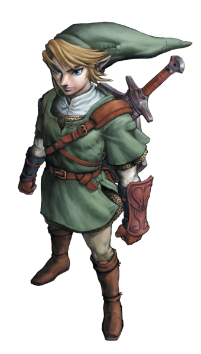
- Jeune Link 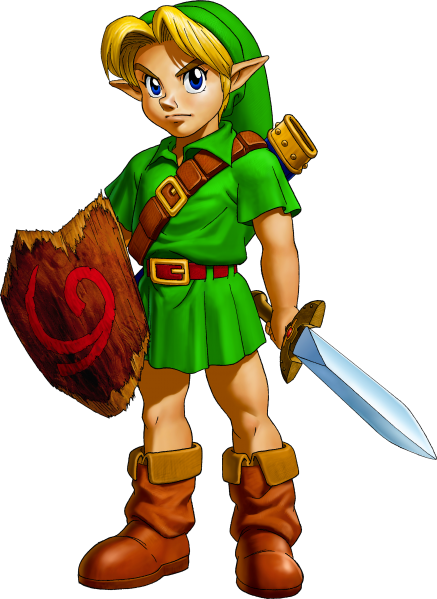
- Link Cartoon 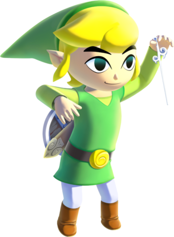
Description du personnage
Link est un personnage dont l’histoire, l'apparence et l’âge peuvent varier au cours des jeux.
De manière générale, on peut le décrire comme un jeune garçon, dont l'âge ne dépasse jamais dix-neuf ans, qui va être amené à quitter son foyer pour partir en voyage afin de combattre les forces du mal.
Bien qu'il ne semble pas connaître très bien le maniement des armes au début des jeux, il maîtrise rapidement de nouvelles techniques et se constitue un arsenal varié (l'épée restant son arme fétiche),
apprend quelques fois la magie, traverse des donjons, pour devenir finalement un héros légendaire.
Link est presque toujours orphelin et fait partie du peuple des Hyliens. Par conséquent, ses oreilles sont pointues.
D'autres traits physiques reviennent à travers les jeux, comme ses cheveux clairs (blonds ou bruns), ses yeux bleus (parfois marrons/verts), et le fait qu'il soit gaucher
(à l'exception des opus Wii et de Breath of the Wild). Sa main gauche possède d'ailleurs parfois le symbole de la Triforce du Courage, dont il est souvent le détenteur.
Il porte une tunique verte dans tous les jeux de la saga, mais peut être amené à obtenir d'autres tenues ou à se transformer.

On peut difficilement avoir une idée de la personnalité de Link car il ne parle jamais, excepté de manière indirecte pour répondre à certaines questions posées par d'autres personnages des différents jeux, et aussi on a tendance à l'entendre crier lorsqu'il passe en mode attaque. Cela est voulu par les développeurs, afin de facilité l'identification au personnage par le joueur. Cependant il est souvent qualifié de jeune homme modeste et courageux toujours prêt à aider ceux qui en ont besoin. Il semble toutefois être assez paresseux, étant donné que presque tous les jeux commencent par une scène où Link dort ou somnole, afin de symboliser son éveil en tant que héros.
Chronologies des épisodes
(note de l'écriveur: l'histoire de cette franchise est trop complexe pour que j'en ai le temps de l'expliqué!! Alors je vais devoir juste faire un cours résumé)
Link incarne le héro principal du jeu Zelda depuis 1986, avec une première apparition sur NES.
Pour informations, Zelda signifie «guerrière grise » en Allemand. Cependant, depuis ce premier jeu, le monde croyait qu'il s'agissait du premier épisode de la franchise, ce qui est faux.
Pendant plusieurs années, la chronologie entre les différents épisodes de The Legend of Zelda était une question problématique et n’était pas officiellement définie.
De l’aveu de Shigeru Miyamoto avant la sortie de The Minish Cap 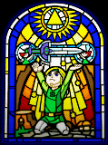, « Ocarina of Time est la première histoire, puis vient le premier The Legend of Zelda, puis The Adventure of Link, et finalement A Link to the Past.
La place de Link's Awakening n’est pas vraiment définie, il pourrait être n’importe où après Ocarina of Time. De nombreux fans ont avancé leur explication, plus ou moins logique, en se basant sur les grands faits des jeux jusqu’à leurs moindres détails.
Plus le nombre de jeux augmente, plus il devient difficile d’établir une chronologie convenable.
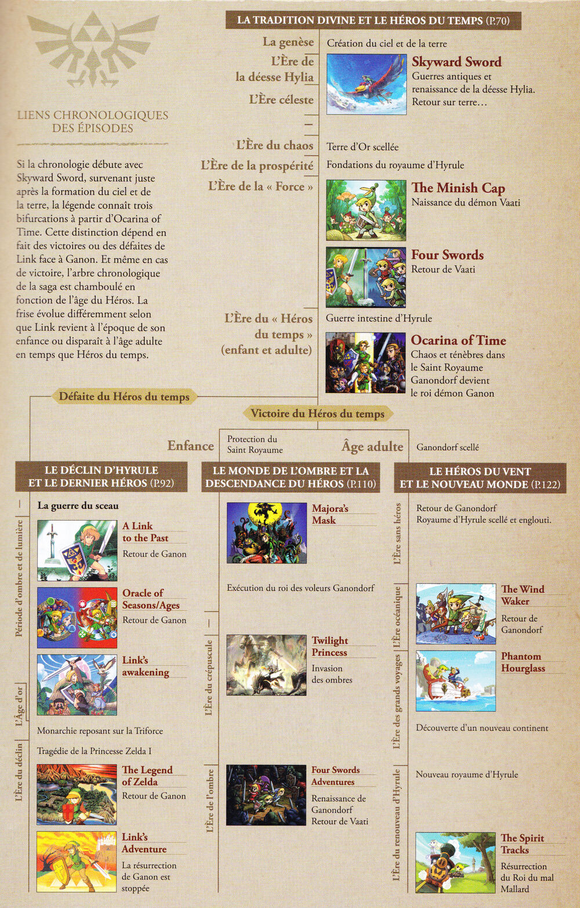
L'histoire qui sert de base pour la plupart des épisodes de la série est celle du héros Link qui doit libérer le royaume d'Hyrule et sa princesse, Zelda, des mains du seigneur du Mal, Ganon (ou Ganondorf dans sa forme humaine).